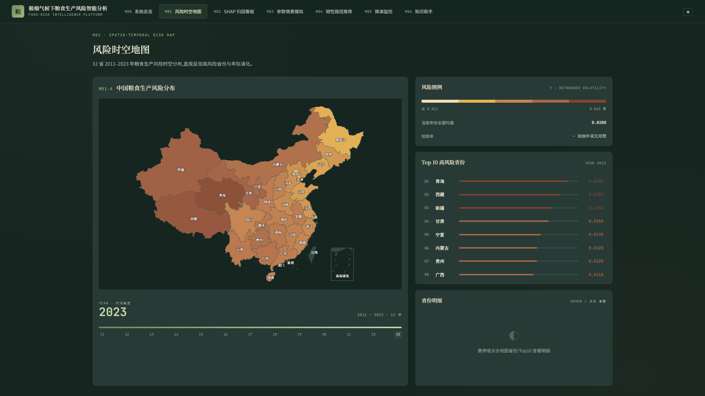
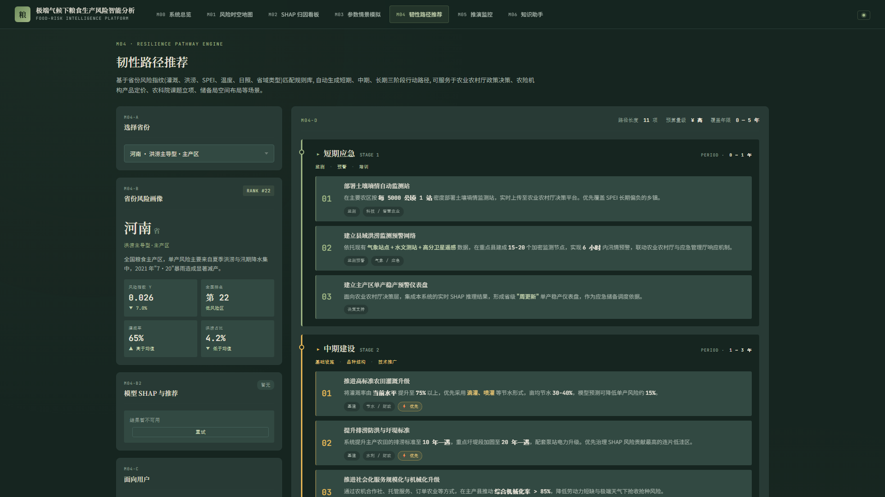
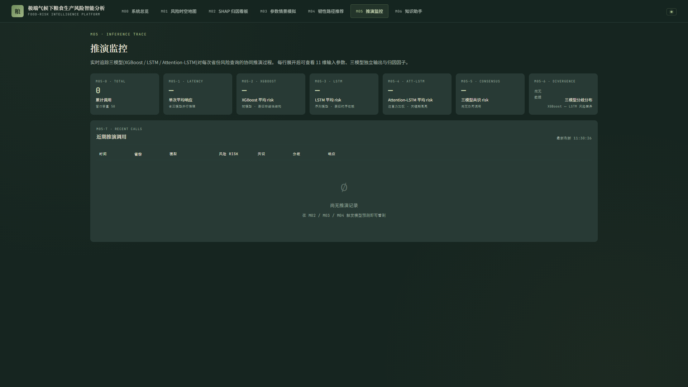

五、应用成效
5.1 成果展示
（1）数据成果
建成 31 省 × 13 年（2011—2023）× 11 维特征的多模态农业面板数据集（N = 403），涵盖气象致灾、遥感长势、生产投入与实际灾情四类变量；在此基础上扩展出城市级（148 个地级市 × 13 年）、县级建模（1 041 县 × 11 年）与县级社会经济（2 725 县 × 23 年，62 676 条记录）三套面板，用于空间尺度递进验证与县域查询。全部数据集配套逐字段的来源说明、单位、时空口径与质量审计结论，可直接被后续研究复用。
（2）模型与归因成果
| 视图 | 方法 | Top-3 因子 |
|---|---|---|
| 横截面边际贡献 | XGBoost-SHAP | 植被指数 > 降水 > 气温 |
| 时序内部偏好 | Attention-LSTM | 旱灾面积 > SPEI > 气温 |
两套排名的 Spearman 等级相关 ρ = −0.055（p = 0.873），Top-3 仅"气温"一项重合。这一结果对农业应用有直接含义：若只看 SHAP，会得到"植被指数最重要"的结论；若只看注意力权重，会得到"旱灾面积最重要"的结论。二者的近零相关说明单一归因方法不足以支撑政策结论，因此系统的韧性路径推荐未采用单一模型的排序，而是让两套视角并列进入加权排序，冲突时按各自权重竞争而非相互否决。

（3）系统成果
交付 7 模块 Web 决策支持系统，包含风险时空地图（31 省 × 13 年时间轴）、单省归因分解、参数情景模拟（调整灌溉率 / 化肥 / 降水等因子实时反馈）、三阶段韧性路径输出、推演过程监控与知识问答能力。以下为系统主要界面的实际运行截图。





（4）实测指标
| 指标 | 实测值 |
|---|---|
| 单次推理响应时间 | 秒级完成（普通云主机，无 GPU） |
| 主报告协议预测精度 | R² = 0.907 ± 0.038（10 种子），RMSE = 312.5 kg/ha |
| 时间外推表现 | R² = 0.894 ± 0.104（leave-year-out） |
| 空间外推表现 | 中位 R² = −16.83（leave-province-out，31 省仅 1 省 > 0） |
| 空间单元下沉表现 | 县级合并 R² = 0.660（leave-county-out） |
| 单点真值校验 | 某主产省某年实际单产 4 615 kg/ha：XGBoost 偏 −227.5，LSTM 偏 −441.6，Attention-LSTM 偏 +42.6 |
| 方差分解 | ICC = 0.9710，95% CI [0.9496, 0.9805]；LR = 741.59 |
| 无障碍规范 | 满足 WCAG 2.2 AA |
| 系统安全 | 6 项安全响应头 + 请求分级限流 |
5.2 效益分析
（1）经济效益
本作品对农业生产的经济价值体现为降低决策试错成本：
- 情景模拟模块可在不实际调整生产的前提下，定量推演"灌溉率提高 / 化肥投入变化 / 降水增减"对区域单产风险的影响方向与量级，为投入决策提供前置参考；
- 数据与系统的边际复制成本极低：新增省份只需补充数据重新训练，系统无需改造，具备规模推广的经济可行性；
- 对农业保险基层机构而言，可解释的分省风险归因可作为差异化产品设计与费率复核的参考依据。
需要说明的是，成本—收益的定量测算需结合试点单位的实际投入与赔付数据，现阶段以定性论证为主；作品不作脱离数据的收益承诺。
（2）社会效益
- 服务粮食安全：为区域农业管理部门提供极端气候情境下的风险识别与因子归因工具，支撑防灾减灾资源的精准投放；
- 降低技术门槛：全中文网页形态、无需安装、无需 GPU 服务器，适配基层使用环境；知识助手（M06）让不具备建模背景的使用者也能检索方法细节与数据口径；
- 推动结论规范使用：通过主动披露空间外推上限（中位 R² = −16.83），避免"AI 预测全国产量"式的过度宣传，这是对农业 AI 应用生态的正向贡献。
（3）学科建设与科研效益
- 方法可迁移：三模型互补归因 + 多协议披露的框架与具体作物无关，可迁移至其他"气候—生产"研究议题；
- 流程可复用：四模态数据对齐与耕地像元加权聚合流程可复用于同类省级面板研究；
- 教学可用：交互式归因看板与情景模拟适合作为农学、农业气象、数据科学相关课程的实训模块；
- 结论可检验：全部超参、随机种子与模型卡片齐备，结论可被独立复现。